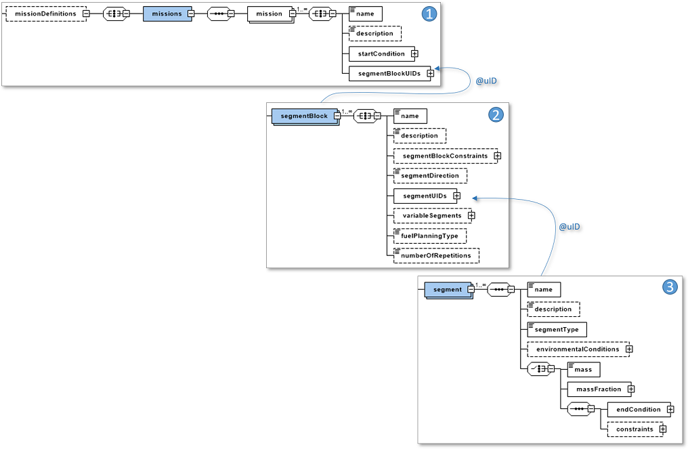
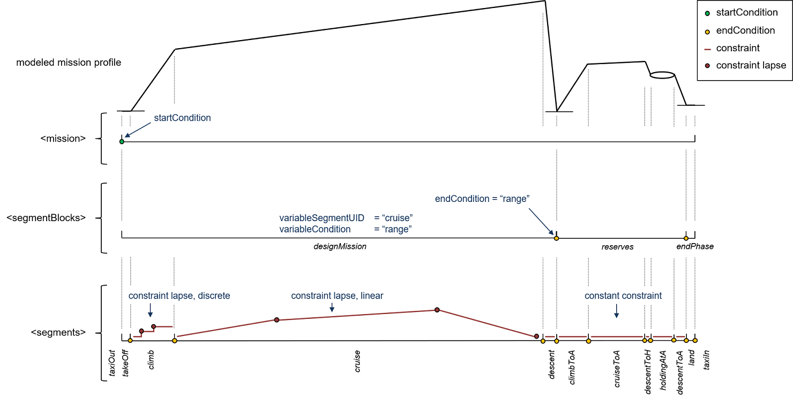

complexType · extension complexBaseType · all
Mission definitions
Specifies mission profiles required for the performance evaluation of air vehicles (aircraft, rotorcraft, etc.). The missionDefininitions node is constructed in such a way, that all civil aircraft missions and missions from MIL-STD-3013A can be specified.
>The mission definition is built-up in a hierarchical way. As the topmost element of the hierarchical mission definition, missions are created within the missions node. Here, one or more segmentBlocks are referenced. These again link to a sequence of segments, making up parts of the missions:

| <missions> | containing the <startCondition> and a sequence of <segmentBlockUIDs> |
| <segmentBlocks> | grouping multiple <segments> and providing overall information concerning the block of segments:
|
| <segments> | containing detailed information per segment: EITHER
OR massFraction OR mass |
the startCondition is provided at the mission node. Each subsequent segmentBlock/segment ends by the provided endCondition.
| <startCondition> | start condition of the mission (can be an airfield or mid-air condition) |
| <endCondition> | specific end condition for a segmentBlock or segment (e.g.: an altitude or velocity) |
| <constraint> | specific performance settings for a segmentBlock or segment (e.g.: a cruise Mach number) |
| attribute @relationalOperator | Indicate how conditions should be interpreted:
|

In the figure above, an example for a civil aircraft transport mission is provided.
The mission starts at a position of 0, 0, 0 with 0 velocity, as provided by the of the mission node. Furthermore, the environmental conditions are provided: ISA atmosphere with a deltaTemperature of 0 [K]. The mission consists of three segmentBlocks: a designMission, reserves and the taxiIn segmentBlock.
<mission uID="exampleMission">
<name>example mission</name>
<description>this is an example mission</description>
<startCondition>
<calibratedAirSpeed>0.0</calibratedAirSpeed>
<positionXYZ>
<x>0.0</x>
<y>0.0</y>
<z>0.0</z>
</positionXYZ>
<environment>
<atmosphericModel>ISA</atmosphericModel>
<deltaTemperature>0.0</deltaTemperature>
</environment>
</startCondition>
<segmentBlockUIDs>
<uID>designMission</uID>
<uID>reserves</uID>
<uID>endPhase</uID>
</segmentBlockUIDs>
</mission>The designMission segmentBlock is shown below. It provides a set of five segments, together making up a mission with a range of 1000 [nm] or 1852 [km]. The “cruise” segment is the variable segment, which thereby should have a range of: 1852000 – range(climb) – range(descent), provided the taxiOut and takeOff segments are not providing any range credit. The fuel burned during this segmentBlock should be added to the designFuel, the segmentDirection is provided for illustration purposes.
<segmentBlocks>
<segmentBlock uID="designMission">
<name>design mission</name>
<description>segment block for the design mission</description>
<segmentBlockConstraints>
<endCondition>
<range relationalOperator="eq">1852000</range>
</endCondition>
</segmentBlockConstraints>
<variableSegments>
<variableSegment>
<segmentUID>cruise</segmentUID>
<variableConditions>range</variableConditions>
</variableSegment>
</variableSegments>
<fuelPlanningType>designFuel</fuelPlanningType>
<segmentDirection>outbound</segmentDirection>
<segmentUIDs>
<uID>taxiOut</uID>
<uID>takeOff</uID>
<uID>climb</uID>
<uID>cruise</uID>
<uID>descent</uID>
</segmentUIDs>
</segmentBlock>
</segmentBlocks>The first and second segment are providing input for the part of the segmentBlock that doesn’t need simulation. During the taxiOut phase, 50 [kg] of fuel is burned. The takeOff phase has a duration of 30 [sec].
<segment uID="taxiOut">
<name>taxi out</name>
<description>taxi out segment</description>
<segmentType>massFraction</segmentType>
<fuelMass>50</fuelMass>
</segment>
<segment uID="takeOff">
<name>take off</name>
<description>take off segment</description>
<segmentType>takeOff</segmentType>
<endCondition>
<duration relationalOperator="eq">00:00:30</duration>
</endCondition>
</segment>The rest of the segments make-up the flying part of the designMission. The climb phase, ending at an altitude of FL330 or 10058.4 [m], provides a constraint-lapse having discrete steps, typical for transport aircraft (a 250 kt / 300 kt / M 0.78 climb profile). Through the referenceEndconditionUID “altClimb”, a link to the altitude endCondition of the segment at the basis of this climb profile is provided.
| Altitude from | Altitude to | calibratedAirspeed | machNumber |
| 0.0 [m] | 0.303 * 10058.4 = 3047.7 [m] | ≤ 128.61 [m/s] | ≤ 0.78 [-] |
| 0.303 * 10058.4 = 3047.7 [m] | 10058.4 [m] | ≤ 154.33 [m/s] | ≤ 0.78 [-] |
The cruise phase is not fixed to a certain altitude and has no endCondition, since its range is determined by the segmentBlock information. The descent phase makes sure the vehicle lands at an altitude of 0 [m]. In this case, since the values are not explicitly provided, it is up to the mission simulation software to determine, when the cruise phase ends and the descent phase starts.
<segment uID="climb">
<name>climb</name>
<description>climb with: speed @ MFCS (set to machNumber le 0.78 [-]), altitude @ FL330</description>
<segmentType>climb</segmentType>
<endCondition>
<positionGeo>
<altitude relationalOperator="ge" uID="altClimb">10058.4</altitude> <!-- FL330 -->
</positionGeo>
</endCondition>
<constraints>
<constraint>
<referenceEndConditionUID>altitude</referenceEndConditionUID>
<endConditionRatio>0.0;0.303</endConditionRatio> <!-- FL0, FL100 -->
<continuity>discrete</continuity>
<calibratedAirSpeed relationalOperator="le">128.61;154.33</calibratedAirSpeed><!-- 250 [kt], 300 [kt]-->
<machNumber relationalOperator="le">0.78;0.78</machNumber>
<prioritySetting>velocity</prioritySetting>
</constraint>
</constraints>
</segment>
<segment uID="cruise">
<name>cruise</name>
<description>cruise with: speed @ optimum cruise speed, altitude @ optimum cruise altitude</description>
<segmentType>cruise</segmentType>
<endCondition/>
</segment>
<segment uID="descent">
<name>descent to MSL</name>
<description>descent to MSL altitude</description>
<segmentType>descent</segmentType>
<endCondition>
<positionGeo>
<altitude relationalOperator="eq">0</altitude>
</positionGeo>
</endCondition>
</segment>Two more segmentBlocks make up the mission. The “reserves” segmentBlock provides information for the cruise to alternate airport and loitering phase and the corresponding burnt fuel is considered reserveFuel. The mission ends with a landing and taxiIn phase within the “endPhase” segmentBlock, of which the burnt fuel is considered additionalFuel. The following then holds: blockFuel = designFuel + additionalFuel.
| Name | Type | Constraints | Use | Default | Description |
|---|---|---|---|---|---|
@externalDataDirectory | xsd:string | optional | Directory of the external data file | ||
@externalDataNodePath | xsd:string | optional | Path of the node inside the external data file | ||
@externalFileName | xsd:string | optional | Name of the external data file |
| Name | Type | Constraints | OccurrenceHow often the element may appear at this place. The schema writes it as minOccurs and maxOccurs on the declaration. | Default | Description |
|---|---|---|---|---|---|
| allThe children below may appear in any order. Each may appear at most once. | |||||
missions | missionsType | [1..1] required | Missions defined for the aircraft | ||
segmentBlocks | missionSegmentBlocksType | [1..1] required | Segment blocks the missions are composed of | ||
segments | missionSegmentsType | [1..1] required | Segments the segment blocks are composed of | ||
| Type | Name |
|---|---|
globalPerformanceCasesType | missionDefinitions |